Step 2: Close the Bluetooth Low Energy window, and from the nRF Connect application, install and open the “Programmer” tool.
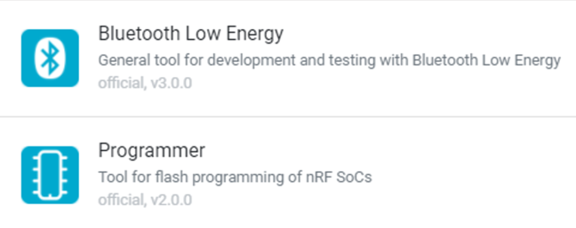
Please close Hand Engine before you start
Step 1: Ensure only one dongle is plugged into your PC and is showing the slow red flashing LED. If the dongle has a solid yellow/greenish light, push the bootloader button while it is connected (see below). 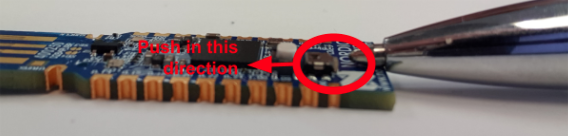
SuperSplay Glove Dongle - Reset (make sure the dongle is connected while pressing the button shown below)
Fidelity Glove Dongle - Reset (make sure the dongle is connected while pressing the button shown below) 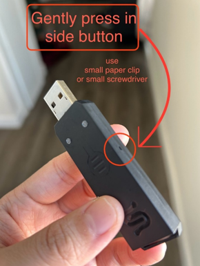
Step 2: Open nRF Connect for Desktop.
Step 3: In the nRF Connect application, install and open “Bluetooth Low Energy”.
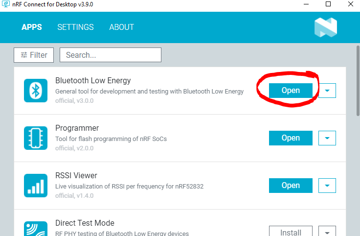
Step 4: Turn on one glove (make sure the other glove is off)
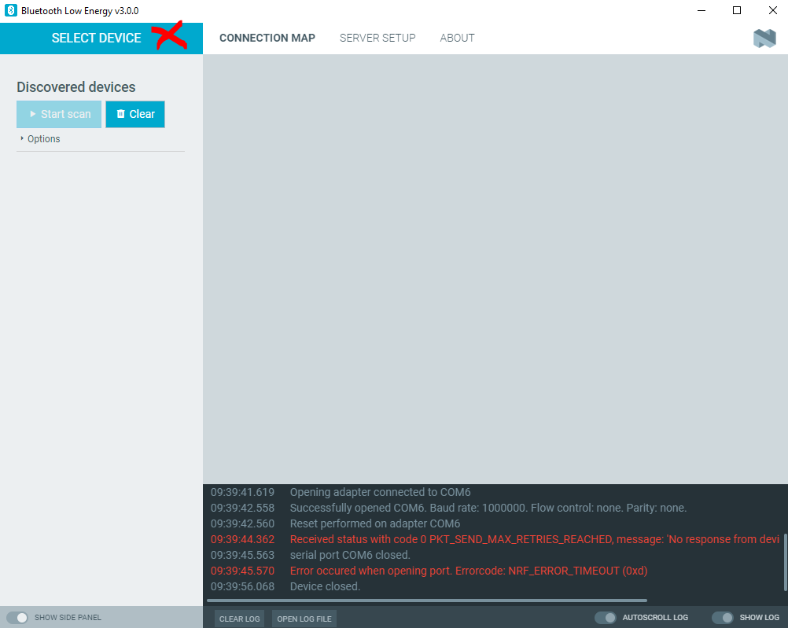 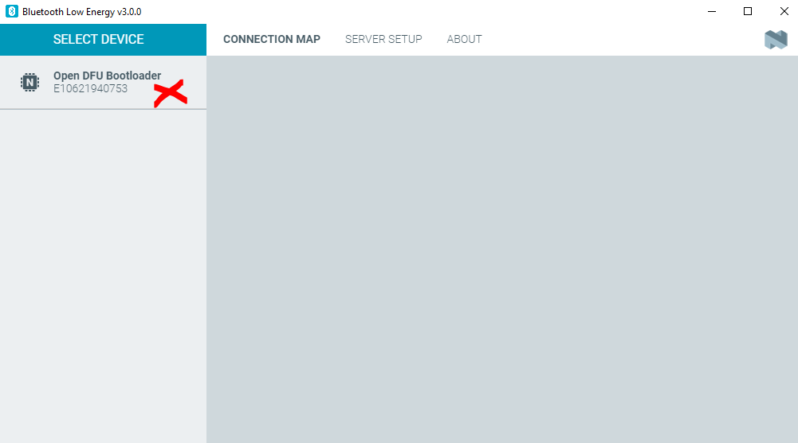 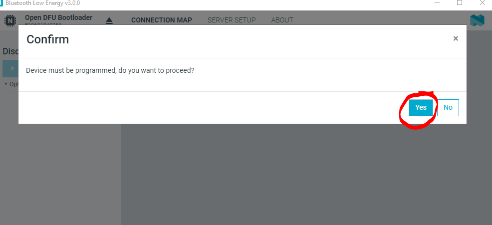
Step 5: After opening the “Bluetooth Low Energy” tool, click on Select Device at the top left.
Then, Select your dongle. It will identify as “Open DFU Bootloader”
Step 6: nRF Connect will prompt to “Confirm, Device must be programmed”. Click Yes. This will install the generic nRF Connect firmware onto the dongle:
When complete it will identify as follows, and the dongle light will be off.
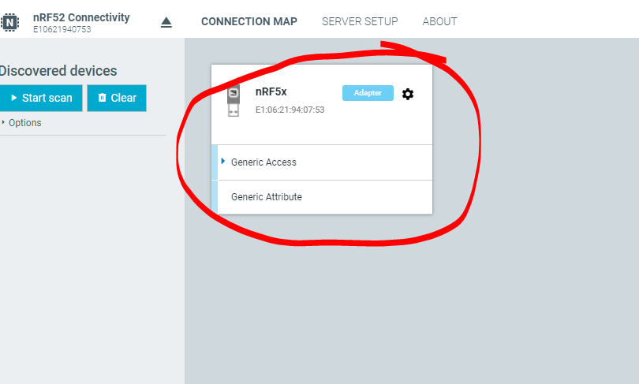
Now you can proceed with the glove update from the same window, and then later on you can update the dongle.
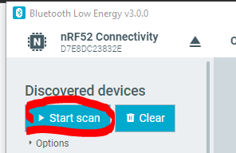
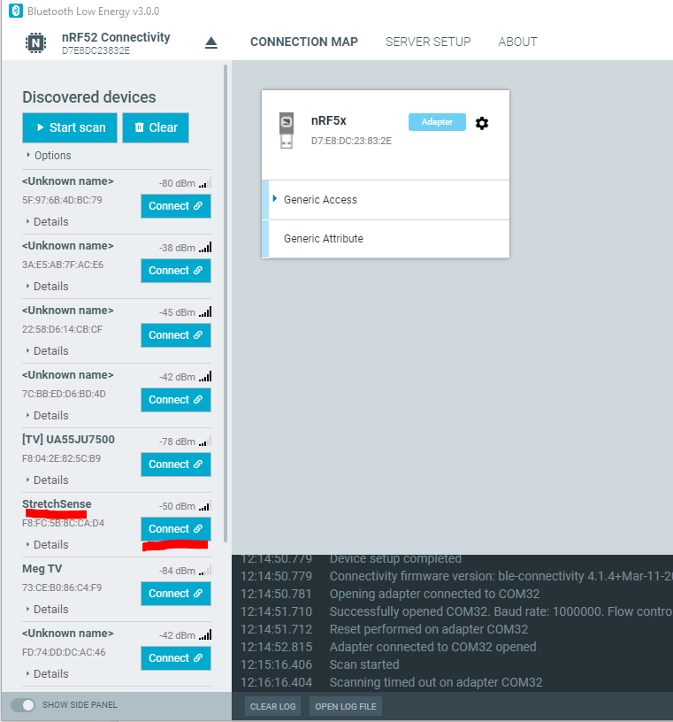
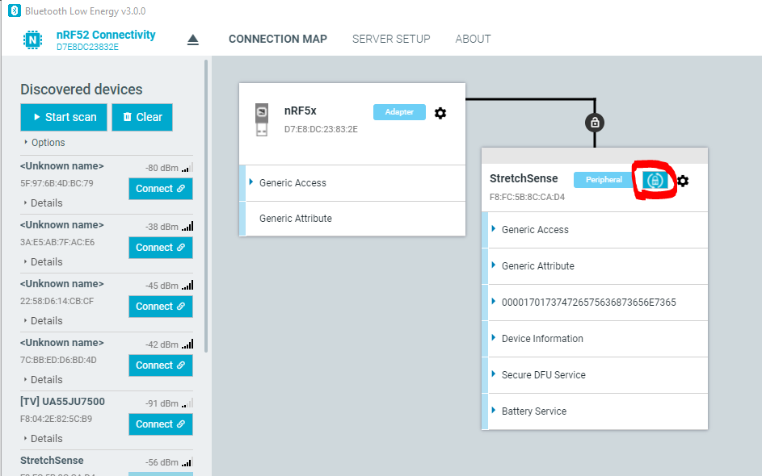
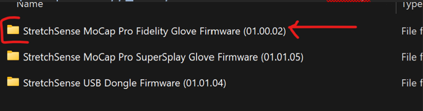
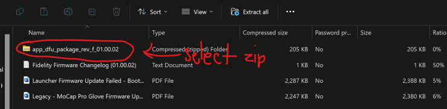
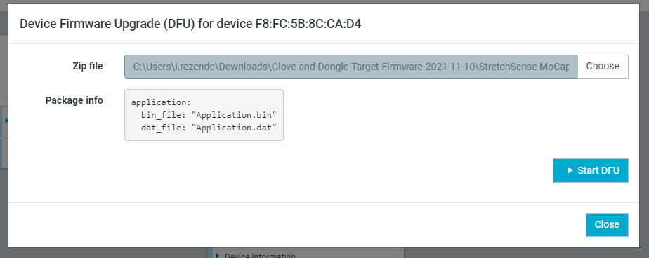
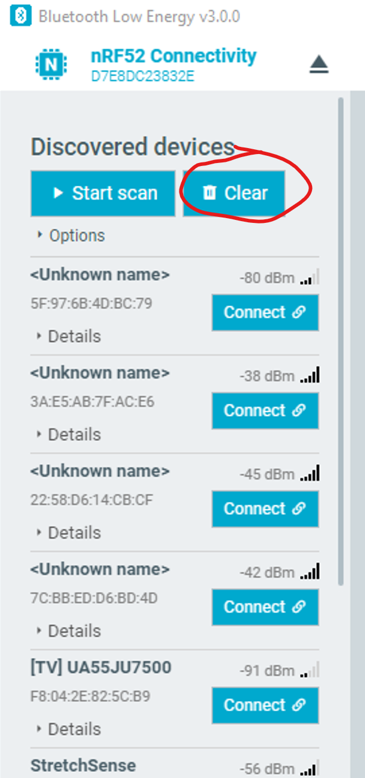
Step 1: Push the bootloader button while it is connected (see image below) so the red flashing light comes up.
SuperSplay Glove
Fidelity Glove
Step 2: Close the Bluetooth Low Energy window, and from the nRF Connect application, install and open the “Programmer” tool.
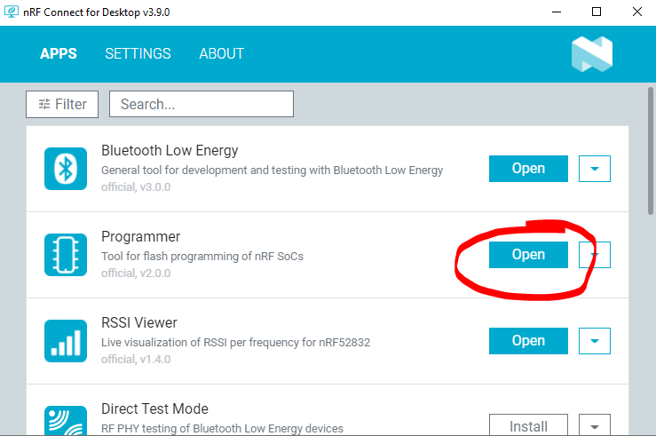 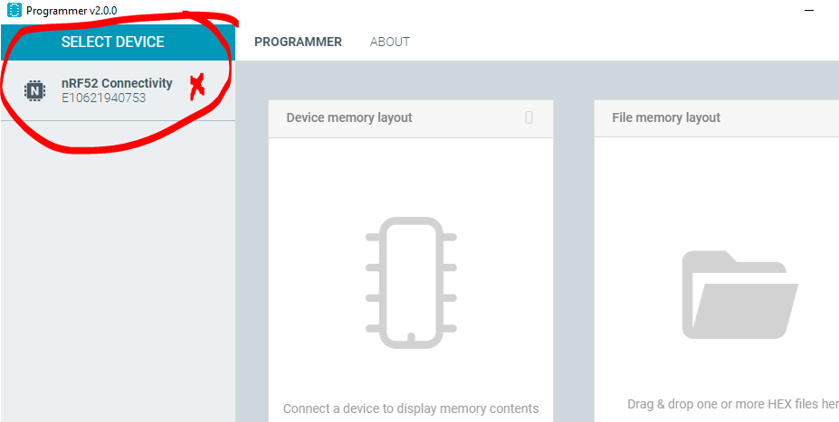 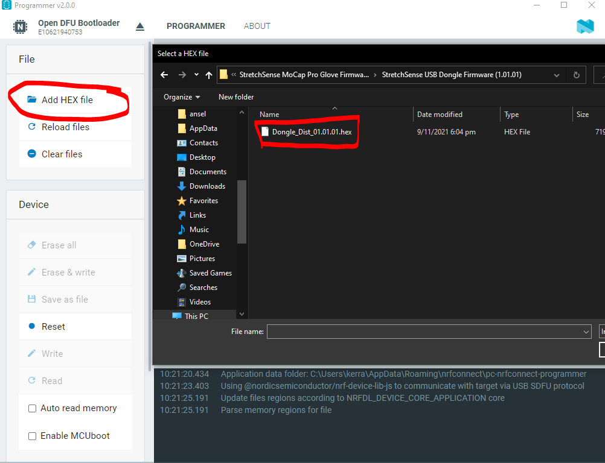 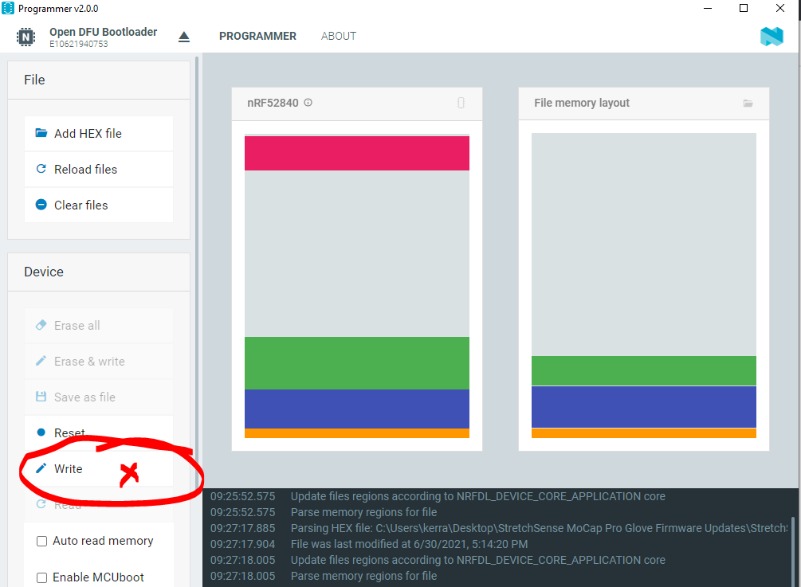 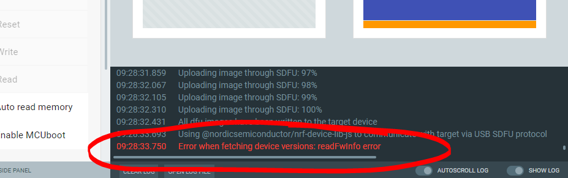
Step 3: Click on Select Device at the top left and select your dongle.
Step 4: Click on “Add HEX file” and select the .hex file downloaded from the MoCap Pro Glove and Dongle Firmware (Legacy Process) Package as advised in the requirements.
Step 5: Click on Write, this will install the StretchSense firmware to the dongle:
Step 6: When complete, nRF Connect will show this error in the console. This is normal and the update will be completed. The dongle light will be green.
Repeat the Process with the other Glove